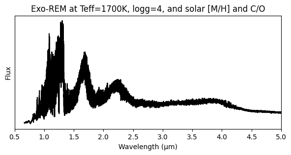

Exo-REM
Example on how to access to the atmospheric grid info to check the parameters and their ranges.
Imports
[5]:
import xarray as xr
import matplotlib.pyplot as plt
Open the grid
You can check the free parameters names, ranges and units together with the wavelength range and spectral resolution.
[3]:
grid_path = '/EXOREM_native.nc'
ds = xr.open_dataset(grid_path, decode_cf=False)
print(ds)
<xarray.Dataset>
Dimensions: (wavelength: 29922, par1: 33, par2: 5, par3: 4, par4: 15)
Coordinates:
* wavelength (wavelength) float64 0.6667 0.6667 0.6667 ... 245.4 248.4 251.6
* par1 (par1) float64 400.0 450.0 500.0 ... 1.9e+03 1.95e+03 2e+03
* par2 (par2) float64 3.0 3.5 4.0 4.5 5.0
* par3 (par3) float64 -0.5 0.0 0.5 1.0
* par4 (par4) float64 0.1 0.15 0.2 0.25 0.3 ... 0.6 0.65 0.7 0.75 0.8
Data variables:
grid (wavelength, par1, par2, par3, par4) float64 ...
Attributes:
key: ['par1', 'par2', 'par3', 'par4']
par: ['teff', 'logg', 'mh', 'co']
title: ['Teff', 'log(g)', '[M/H]', 'C/O']
unit: ['(K)', '(dex)', '', '']
res: [29999.50000004 29998.49999991 29997.50000002 ... 80.5\n ...
Get a spectrum for specific values
[14]:
# Open the grid
grid = ds['grid']
# get wavelength
wave = grid['wavelength'].values
# for Exo-REM par1=Teff, par2=logg, par3=[M/H], par4=C/O
# get flux by selecting a value for each parameter
flux = grid.sel(par1=1700,par2=4.0, par3=0., par4=0.55, method="nearest")
# Plot the spectrum
plt.figure(figsize=(7,3))
plt.plot(wave, flux*wave, 'k')
plt.xlabel('Wavelength (µm)')
plt.ylabel('Flux')
plt.xlim(0.5,5)
plt.yticks([])
plt.title('Exo-REM at Teff=1700K, logg=4, and solar [M/H] and C/O')
plt.show()
